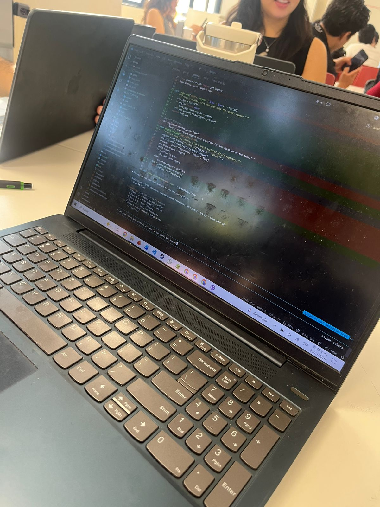
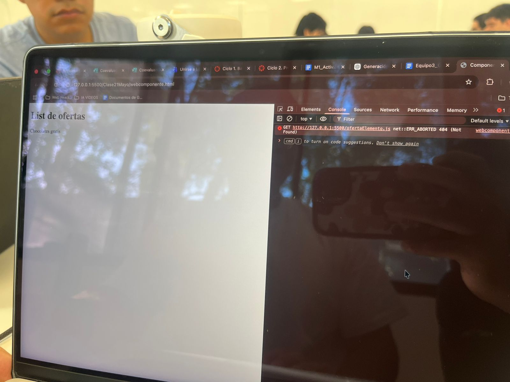
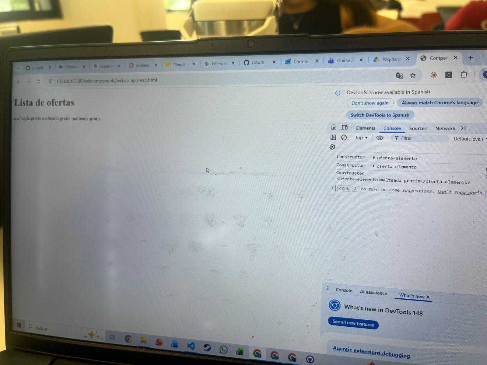
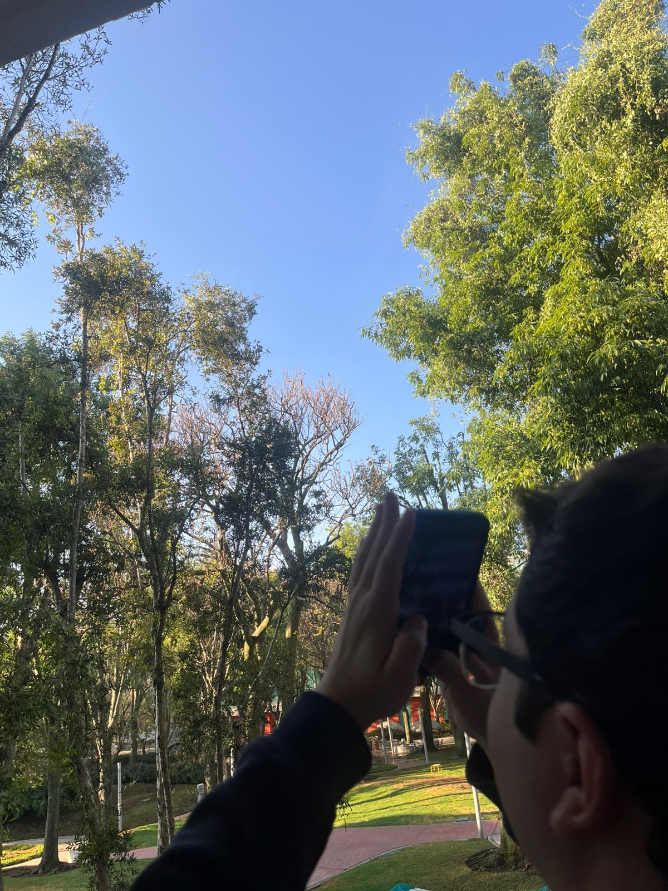
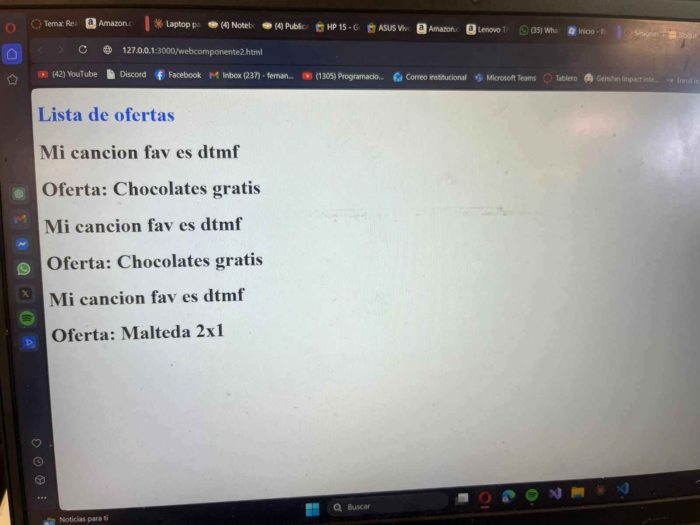

/*RESPUESTA FOTO QUE ES UN COMPONENTE FOTO DEL CIELO
Yo considero que un componente es parte del sistema que se puede reutilizar.
En este caso, la foto del cielo es un componente porque se los arboles pueden usarse en otras fotos.*/
/*RESPUESTA FOTO DEL CODIGO DE MI AMIGO
Lo que falla del codigo de mi compañero es que esta trabajando en algo mas en vez de la actividad
*/
/*RESPUESTA FOTO DE LA TERMINAL DE MI AMIGO
Lo que fallo del codigo fue que la ruta estaba mal definida, se arregla agregando el "./" antes del nombre del archivo js, quedando asi: import "./OfertaElemento.js";
*/
/*RESPUESTA FOTO DE LA TERMINAL DE MI AMIGO DESPUES DE CORREGIR EL ERROR
La pagina ya muestra los textos de las etiquetas y los mensajes en la consola.
*/
Componente
Componentes Web




